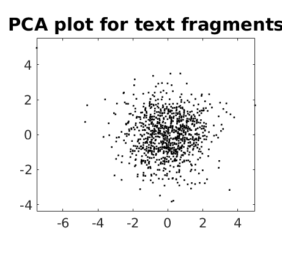
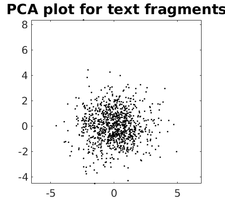
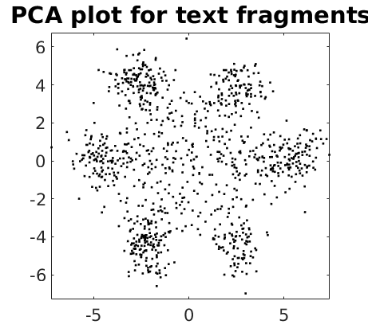
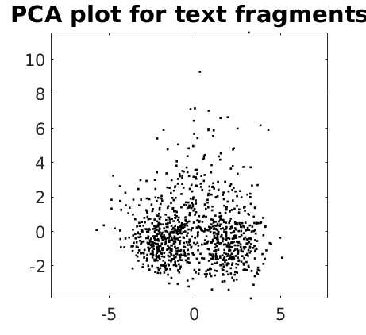

PCA e K-Means para decifrar o genoma
Abrantes Araújo Silva Filho (abrantesasf@gmail.com)
Este é um estudo de caso reproduzindo a análise de Alexander N. Gorban e Andrei Y. Zinovyev, publicada no livro Principal Manifolds for Data Visualization and Dimension Reduction (Lecture Notes in Computational Science and Engineering). O capítulo original pode ser baixado na íntegra no site do autor (http://www.ihes.fr/~zinovyev/) e o livro pode ser adquirido na Amazon.
Atenção: como eu apenas reproduzi a análise original dos autores citados, como forma de estudo da aplicação de PCA e K-Means no MATLAB, nenhum conteúdo aqui é de minha autoria, EXCETO algumas funções para o MATLAB (as funções originais fornecidas pelos autores, no livro publicado em 2007, não funcionaram no MATLAB R2017a, que é a versão que eu utilizo; assim, tive que reescrever totalmente algumas funções para reproduzir a análise na minha versão do MATLAB... e essas novas funções são de minha autoria). Eu indiquei no texto quais foram as funções que eu preparei e quais são as funções originais dos autores.
Contents
O problema a ser resolvido
Quando alguma notícia surge dizendo que o genoma, por exemplo, de uma bactéria foi decifrado, geralmente a notícia quer dizer apenas que esse genoma foi lido e transcrito como uma grande seqüência de 4 letras: A, C, G e T. Por exemplo:
[...]cgtggtcaatgatgcctagggcgcacgtatgcctagctagtttccagactcagtgcgttaactagctaa[...]
Essa seqüencia de letras é só o primeiro passo para decifrar o genoma. Mais importante do que a seqüência de letras é tentar descrobrir a mensagem codificada nessa seqüência de letras, a mensagem genética que nos faz ser o que somos. E essa mensagem é formada por uma seqüência dessas letras, de comprimento variável, chamada de gene. Por exemplo, na seqüência abaixo, podemos ver 2 genes (em negrito-itálico vermelho):
[...]cgtggtcaatgatgcctagggcgcacgtatgcctagctagtttccagactcagtgcgttaactagctaa[...]
Dada essa estrutura, alfabeto de 4 letras formando os genes, algumas perguntam precisam de respostas:
- Todas as letras fazem parte de algum gene? Ou seja, toda a seqüência de letras sempre formará um ou mais genes? Ou existem seqüências de letras que não formam genes?
- Dentro de um gene, as letras por si mesmas são responsáveis pela informação genética ou é algum tipo de agrupamento das letras (uma "palavra") que contém a informação genética? Por exemplo: a informação genética é contida a cada palavra com duas, três, quatro, cinco ou mais letras?
- Se dentro de um gene a informação genética é dada, por exemplo, por grupos de 4 letras ("palavras" de 4 letras), algumas dessas letras podem ser sobrepostas à outras palavras? Por exemplo: as letras CASAPO podem formar 2 palavras de 4 letras, CASA e SAPO. Essa sobreposição das letras SA existe nos genes?
Décadas de pesquisas genéticas já forneceram respostas para essas perguntas:
- Existem letras que realmente não formam genes, elas parecem estar ali para preencher o espaço "vazio"
- A informação genética é contida a cada grupo de 3 letras, chamado de códon
- Não existe sobreposição das letras, ou seja, as letras que formam um códon não são utilizadas para formar outro códon. Por exemplo, as letras SALUA não formam 2 palavras de 3 letras (SAL e LUA), pois haveria sobreposição da letra L. Os códons não são sobrepostos.
Assim, já sabemos que nossa informação genética está codificada em genes, que são seqüências específicas das letras A, C, G e T, e que dentro desses genes, a informação genética está contida em códons, agrupamentos de 3 letras, sem sobreposição. Uma outra observação: os genes em organismos simples, como uma bactéria, tendem a ser seqüências ininterruptas mas, em organismos superiores, como o homem, os genes pode ser "quebrados", sem formar uma seqüência ininterrupta (um mesmo gene pode ser dividido em dois ou mais pedaços separados no DNA).
Neste estudo de caso estamos interessados em usar PCA e K-Means para duas coisas:
- Usaremos a PCA para "descobrir" que a informação genética está contida em grupos de 3 letras (os códons), e não em grupos de 1, 2, 4 ou mais letras; e
- Usaremos o K-Means para encontrar a localização dos genes na seqüência de letras do DNA.
Utilizaremos um fragmento do DNA da bactéria Caulobacter crescentus, na qual o tamanho médio dos genes é de aproximadamente 1000 letras.
Ambiente da análise
A análise foi realizada utilizando-se o MATLAB R2017a, em um notebook Linux (Fedora 26), 64 bits, com 6 GB RAM. A análise foi realizada em um script, em MATLAB Markup, para reprodutibilidade.
% Informações sobre o Linux: !uname -a
Linux localhost.localdomain 4.13.9-200.fc26.x86_64 #1 SMP Mon Oct 23 13:52:45 UTC 2017 x86_64 x86_64 x86_64 GNU/Linux
% Informações sobre o MATLAB:
ver
---------------------------------------------------------------------------------------------------- MATLAB Version: 9.2.0.556344 (R2017a) MATLAB License Number: 40570225 Operating System: Linux 4.13.9-200.fc26.x86_64 #1 SMP Mon Oct 23 13:52:45 UTC 2017 x86_64 Java Version: Java 1.7.0_60-b19 with Oracle Corporation Java HotSpot(TM) 64-Bit Server VM mixed mode ---------------------------------------------------------------------------------------------------- MATLAB Version 9.2 (R2017a) Curve Fitting Toolbox Version 3.5.5 (R2017a) Database Toolbox Version 7.1 (R2017a) Neural Network Toolbox Version 10.0 (R2017a) Partial Differential Equation Toolbox Version 2.4 (R2017a) Statistics and Machine Learning Toolbox Version 11.1 (R2017a) Symbolic Math Toolbox Version 7.2 (R2017a)
Leitura da seqüência do DNA da Caulobacter crescentus
Um fragmento do DNA da bactéria está em um arquivo no formato Fasta, com a extensão .fa, e precisa ser lido para alguma estrutura do MATLAB. Os autores originais forneceram a função LoadSeq para isso:
% Lê o aquivo para o objeto vetor DNA: dna = LoadSeq('ccrescentus.fa');
Reading fasta-file... 200 lines 400 lines 600 lines 800 lines 1000 lines 1200 lines 1400 lines Length of the string:305400
Estrutura do vetor dna
whos dna % Podemos ver que o objeto dna é um vetor de linha do tipo caracteres, e tem 305.400 letras (A, C, % G e T).
Name Size Bytes Class Attributes dna 1x305400 610800 char
Vamos ver as 100 primeiras letras:
dna(1:100)
ans =
'gccgatagcctatgatccccggcaggcccggggcttggagccgtctggtttggatggaaccctccaaaccagatcaagaggctcctagaacgccgcccgc'
Agora vamos comprovar que esse vetor de letras não tem nenhum espaço ' ':
contains(dna, ' ')
ans = logical 0
Criação dos datapoints
Note que até o momento a única coisa que temos é o objeto vetor, com a seqüência de 305.400 letras, sem nenhum epaço entre essas letras. Não temos nenhuma separação de "palavras" aqui, só uma grande seqüência de letras.
Essa seqüência de letras não serve como datapoint para nossas análises, precisamos criar tais datapoints. Faremos isso com o seguinte procedimento:
- Quebraremos a seqüência de letras em pedaços de 300 letras: segundo os autores, como o tamanho médio do gene de uma bactéria é de 1000 letras, pedaços com 300 letras são suficientes para detectar os genes nessa escala;
- Calcularemos a quantidade de palavras (agrupamentos de letras) dentro de cada pedaço de 300 letras, contando quantas palavras com 1, 2, 3 e 4 letras (não sobrepostas) existem em cada pedaço.
Dessa maneira teremos 4 matrizes diferentes: * Matriz 1: 1018 linhas e 4 colunas (para a quantidade de palavras de 1 letra: a, t, c e g) * Matriz 2: 1018 linhas e 16 colunas (para a quantidade de palavras com 2 letras: aa, at, ac, ...) Matriz 3: 1018 linhas e 64 colunas (para a quantidade de palavras com 3 letras: aaa, aat, ata, ...) Matriz 4: 1018 linhas e 256 colunas (para a quantidade de palavras com 4 letras: aaaa, aaat, aatt, atat, ...)
Nossos datapoints serão a contagem das palavras de 1, 2, 3 ou 4 letras, em cada um dos 1018 fragmentos com 300 letras de DNA.
% A primeira coisa que temos que fazer então é dividir nossa seqüência de % DNA com 305.400 letras, em 1018 fragmentos com 300 letras. Para isso % vamos usar a função preparaFramentos.m que eu escrevi: fragmentos = preparaFragmentos(dna, 300);
% Agora vamos calcular a freqüencia das palvras com 1, 2, 3 ou 4 letras, em % cada fragmento de DNA com 300 letras, utilizando a função % calculaFrequencia.m que eu escrevi: xx1 = calculaFrequencia(fragmentos, 1); xx2 = calculaFrequencia(fragmentos, 2); xx3 = calculaFrequencia(fragmentos, 3); xx4 = calculaFrequencia(fragmentos, 4);
Visuzliando quantas letras foram uma palavra genética (códon)
Agora que temos 4 matrizes com as contagens das palavras genéticas com 1, 2, 3 e 4 letras, a tarefa é tentar descobrir se a informação genética está armazenada em palavras com 1, 2, 3 ou 4 letras.
Poderíamos tentar plotar gráficos para descobrir mas com 4 a 256 variáveis, não é possível um gráfico com tantas dimensões. A solução é usar Principal Componente Analysis (PCA) e plotar gráficos com apenas os 2 componentes principais, permitindo assim uma fácil visualização. Os autores originais forneceram a função PCAFreq.m, que faz a PCA e já plota o gráfico:
Gráfico para palavras genéticas com 1 letra:
PCAFreq(xx1);
Gráfico para palavras genéticas com 2 letras:
PCAFreq(xx2);
Gráfico para palavras genéticas com 3 letras:
PCAFreq(xx3);
Gráfico para palavras genéticas com 4 letras:
PCAFreq(xx4);
%
 Como ficou evidente pelos 4 gráficos acima, a informação genética está codificada em palavras com 3 letras, os códons, pois foi o único gráfico que apresentou uma estrutura claramente visível, com 7 agrupamentos claramente visíveis: 6 agrupamentos ao redor de 1 agrupamento central.
Os gráficos para palavras com 1, 2 ou 4 letras não apresentaram nenhuma estrutura aparente, indicando que a informação genética realmente está codificada em palavras com 3 letras.
O motivo do gráfico mostrar 7 agrupamentos distintos é explicado em detalhes pelos autores e é relacionado ao modo arbitrário que usamos para dividir a seqüencia de DNA em fragmentos para análise. Para maiores informações, veja a publicação original.
Definição das funções utilizadas
As funções foram retiradas diretamente do livro Principal Manifolds for Data Visualization and Dimension Reduction (Lecture Notes in Computational Science and Engineering), e ajustadas por mim para uma melhor leitura:
% Prepara vetor de fragmentos com 300 letras %evec = []; %pos = 1; %for i = 1 : size(dna, 2)/300 % evec = [evec; dna(pos:i*300)]; % i = i + 1; % pos = pos + 300; %end %soma = 0; %pos = 1; %for i = 1 : size(evec, 1) % soma = soma + sum(evec(i, 1:300) == dna(pos:i*300)); % i = i + 1; % pos = pos + 300; %end %soma %xx1 = []; %a = 0; %t = 0; %c = 0; %g = 0; %for i = 1 : size(evec, 1) % a = count(evec(i, 1:300), 'a'); % t = count(evec(i, 1:300), 't'); % c = count(evec(i, 1:300), 'c'); % g = count(evec(i, 1:300), 'g'); % v = [a t c g]; % xx1 = [xx1; v]; % i = i + 1; %end %xx1(1:10, 1:4) %palavrasCom1Letra = []; %palavrasCom2Letras = []; %palavrasCom3Letras = []; %palavrasCom4Letras = []; %alfabetoGenetico = 'atcg'; %for i = 1:4 % letrasNasPalavras = i; % C = cell(letrasNasPalavras, 1); % [C{:}] = ndgrid(alfabetoGenetico); % y = cellfun(@(alfabetoGenetico){alfabetoGenetico(:)}, C); % y = [y{:}]; % if letrasNasPalavras == 1 % palavrasCom1Letra = y; % elseif letrasNasPalavras == 2 % palavrasCom2Letras = y; % elseif letrasNasPalavras == 3 % palavrasCom3Letras = y; % else % palavrasCom4Letras = y; % end %end %xx1 = []; %for i = 1 : size(evec, 1) % v = []; % for j = 1: size(palavrasCom1Letra, 1) % temp = count(evec(i, 1:300), palavrasCom1Letra(j, 1)); % v = [v temp]; % j = j + 1; % end % xx1 = [xx1; v]; % i = i + 1; %end %xx2 = []; %for i = 1 : size(evec, 1) % v = []; % posicaoInicial = 1; % posicaoFinal = 2; % for j = 1: size(palavrasCom2Letras, 1) % temp = count(evec(i, 1:300), palavrasCom2Letras(j, 1:2)); % v = [v temp]; % j = j + 1; % end % xx2 = [xx2; v]; % i = i + 1; %end %xx2 = []; %for i = 1 : size(palavrasCom2Letras, 1) % teste = palavrasCom2Letras(i, 1:2); % v = []; % soma = 0; % for j = 1 : size(evec, 1) % posicaoInicial = 1; % posicaoFinal = 2; % for k = 1 : 150 % soma = soma + count(evec(j, posicaoInicial:posicaoFinal), teste); % posicaoInicial = posicaoInicial + 2; % posicaoFinal = posicaoFinal + 2; % k = k + 2; % end % j = j + 1; % v = [v soma]; % end % xx2 = [xx2; v]; % i = i + 1; %end %temp = []; %letras = 2; %for i = 1:1 % posicaoInicial = 1; % posicaoFinal = letras; % for k = 1:(300/letras) % temp = [temp; evec(i, posicaoInicial:posicaoFinal)]; % posicaoInicial = posicaoInicial + letras; % posicaoFinal = posicaoFinal + letras; % end % i = i + 1; %end %letras = 3; %matriz = randi([1, 1018*4^letras], 1018, 4^letras) * 0; %for l = 1:size(evec, 1) % posicaoInicial = 1; % posicaoFinal = letras; % for c = 1:(300/letras) % for p = 1:size(palavrasCom3Letras) % temp = evec(l, posicaoInicial:posicaoFinal); % if temp == palavrasCom3Letras(p, 1:letras) % matriz(l, p) = matriz(l, p) + 1; % end % p = p + 1; % end % posicaoInicial = posicaoInicial + letras; % posicaoFinal = posicaoFinal + letras; % end % l = l + 1; %end %matriz = randi([1, 1018*16], 1018, 16) * 0 %matriz = matriz * 0 %// Sample data %alfabetoGenetico = 'atcg'; %// Set of possible letters %letrasNasPalavras = 4; %// Length of each permutation %// Create all possible permutations (with repetition) of letters stored in x %C = cell(letrasNasPalavras, 1); %// Preallocate a cell array %[C{:}] = ndgrid(alfabetoGenetico); %// Create K grids of values %y = cellfun(@(alfabetoGenetico){alfabetoGenetico(:)}, C); %// Convert grids to column vectors %y = [y{:}]; %// Obtain all permutations